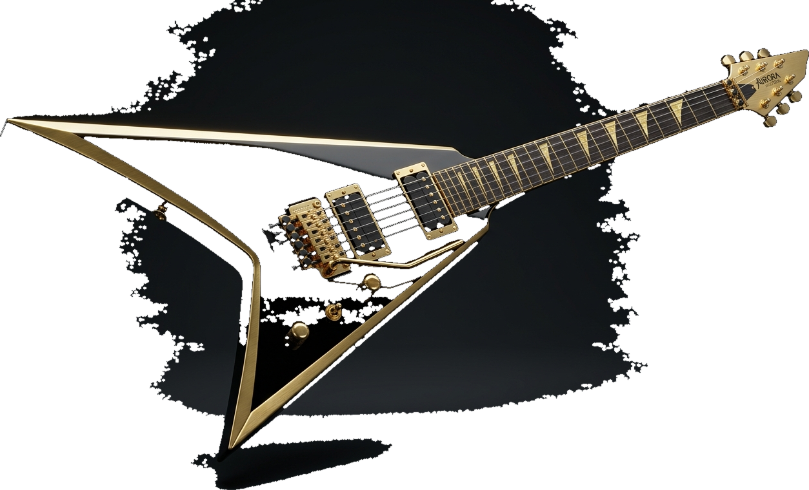

DESENVOLVIMENTO FRONTEND
HTML5 semântico, Tailwind, Vanilla JS e interfaces responsivas.

[ OLÁ, EU SOU ]
Tenho 16 anos, sou estudante do 2º ano de Desenvolvimento de Sistemas e formado no curso de Programador Web pelo Senac . Crio código de alta precisão, interfaces funcionais e experiências visuais marcantes.
PALCO // KING V INTERATIVA
Arraste o mouse (ou o dedo) pelas cordas para dedilhar. Clique no braço para escolher a casa e tocar a nota.
DICA: clique na guitarra e use as teclas 1–6 para tocar cada corda, ESPAÇO para um acorde e R para o riff.
01 // MANIFESTO & FORMAÇÃO
Minha formação combina arquitetura, dados, lógica computacional e engenharia de software.
No Senac, finalizei o curso de Programador Web , estudando interfaces responsivas, APIs e JavaScript.
Formação completa em HTML, CSS, JavaScript, backend e publicação de aplicações web.
HTML5 semântico, Tailwind, Vanilla JS e interfaces responsivas.
SQL, modelagem relacional, POO e regras de negócio.
DOM, Canvas, partículas, cursor e microinterações.
Git, GitHub, branches organizadas e documentação.
02 // COMPETÊNCIAS & ARQUIVOS
Clique nas categorias técnicas para inspecionar minhas ferramentas.
Performance, acessibilidade, compatibilidade e design responsivo.
Rotas, requisições, SQL e operações CRUD.
Alto contraste, tipografia, animações e design systems.
03 // REPOSITÓRIOS & DESENVOLVIMENTO
Aplicações práticas com código aberto no meu GitHub.
JavaScript assíncrono, DOM e Tailwind CSS.
SAIBA MAIS →Páginas responsivas, formulários e layouts.
SAIBA MAIS →Algoritmos, POO, CRUD e protótipos comerciais.
SAIBA MAIS →04 // CONTATO DIRETO
Pronto para novos desafios, estágios, projetos e parcerias.